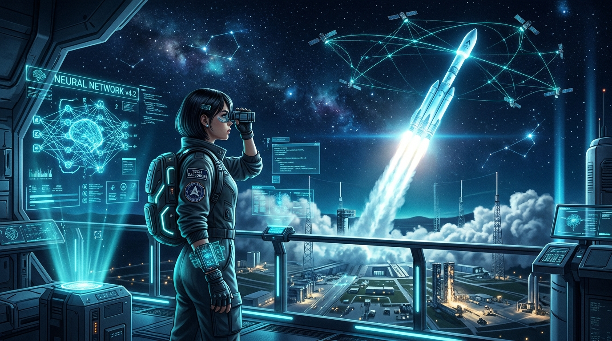

Visual & Technical Exploration
Where Engineering Meets Creative Vision
Representing my exploration journey through cinematic space tech artwork, generative AI fractals, and high-performance animations.

THE EXPLORATION VISION
Cosmic Observation & Neural Computing
Combining advanced artificial intelligence with orbital launch systems to expand human reach beyond terrestrial boundaries.
Enter Art & Animation Gallery →
PROPULSION & SATELLITES
Autonomous CubeSats
6U miniaturized orbital science modules with deployable solar arrays.
Test Orbit Sim →
GENERATIVE ENHANCEMENTS
Algorithmic Trajectories
Mathematical fractals and interactive canvas particle networks.
Launch Canvas →